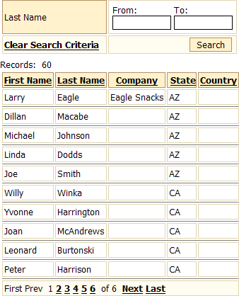
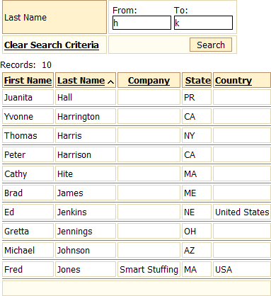

Filtering a Grid with Range Search
Alpha Five Version 7 introduces Range Search, an option that allows you to quickly filter a field by low and high values and redisplay the grid.
To add Quick Search to a grid:
Create a grid based on the Customer table of the AlphaSports database. Make sure the grid displays the "Lastname" field.
If the grid is not already open in the Grid Builder, open it now.
Display the Component Type page.
Make sure that Grid contains a search part is selected.
Display the Search > Fields page.
Select the "Lastname" field in the Fields to Search In list.
Select "True" in the Display Settings > Range search list.
Display the Search > Properties page.
Select "False" in the Search Options > Show title list.
Select "False" in the Sort Options > Include 'Sorting' listbox list.
Select "False" in the Records per Page Listbox Options > Include 'Records per Page' listbox list.
Define Quick Search Choices
The Preview tab of the Grid Builder should show something like the following.

Publish the page with the grid and enter "h" and "k" in the From and To fields.
Click Search.
Click the Last Name column title to sort the grid.

 Note : The To field defines a value that is greater than or equal to all the field values that will be displayed. If you typed "j" into this field, you would not see any entries beginning with "j". The value "jzzzz" would work as well as "k" in the To field.
Note : The To field defines a value that is greater than or equal to all the field values that will be displayed. If you typed "j" into this field, you would not see any entries beginning with "j". The value "jzzzz" would work as well as "k" in the To field.
See Also
Supported By
Alpha Five Version 7 and Above